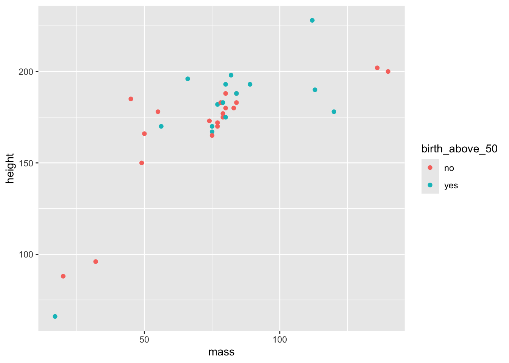

x <- c(1,2,3,4,5)
mean(x)[1] 3Sven De Maeyer
This site bundles all the material used for the course ABAR_Turku2025.
Instructor:
All materials for the course can be downloaded via the github page .
Questions or feedback, do not hesitate to contact me at sven.demaeyer@uantwerpen.be
In a broad range of scientific disciplines, Bayesian statistics are gaining popularity. Yet the basic training of most researchers only introduces the frequentist framework for statistical inference. This workshop aims to introduce Bayesian statistics in a practical way, laying a foundation for crucial concepts in the Bayesian realm.
Participants will be introduced to a workflow for Bayesian analyses in the open-source environment R. The starting point will be the linear model (aka regression model) and we can extend this to linear mixed models. The central piece of software will be the brms package in R, that bridges the typical R modelling language with Stan, which is a probabilistic programming language built to estimate models within the Bayesian framework. Given that a workflow in R will be introduced, it is advised that participants have some experience working with R. Moreover, packages will be used from the tidyverse (e.g., dplyr, ggplot2, …). Therefore, we advise participants to acknowledge themselves with these packages.
| When? | Where |
|---|---|
| Monday 9th of June (9-11 am) | |
| Wednesday 11th of June (9-11 am) | |
| Friday 13th of June (9-11 am) | |
| Monday 16th of June (9-11 amà |
For the workshop we will be using R. To be able to participate properly, it is advisable to install a number of packages on your own PC beforehand, as well as to become familiar with the way I usually code in R. This document is a brief guide to help you prepare.
Bayesian estimation and analyses require some dedicated samplers that should be installed on your machine. The workflow that we will cover in the workshop relies on Stan software. Stan stands alone from R but can be called through R making use of two different ways. We will cover this more in the workshop.
For the workshop I will use the CmdStan chain and the package cmdstanr. Therefore I would encourage you to download and install a working cmdstan and cmdstanr. The following vignette can help you accomplish this: https://mc-stan.org/cmdstanr/articles/cmdstanr.html
Normally if you follow the steps described in that vignette you will succeed in installing and testing your installation.
brmsFor the analyses we will rely on the amazing package brms. Installing this package is not that difficult, but maybe install before the workshop and start some exploring ;-)
tidyverseWhen I code I use the functional programming approach and a lot of the tidy principles (see below). The package tidyverse bundles a set of packages that are needed for this approach to coding. If you want to learn more on the whole universe of tidyverse you can explore the book of Hadley Wickham: https://r4ds.had.co.nz/
ggplot2Part of the tidyverse package is the ggplot2 package. Therefore it will be installed if you also install tidyverse normally. Nevertheless, I find it worth mentioning separately because I think knowing how to make graphs with ggplot2 is very handy even if you do not dive into bayesian analyses. A great resource to learn to visualize your data is the tutorial written by Cédric Scherer: https://www.cedricscherer.com/2019/08/05/a-ggplot2-tutorial-for-beautiful-plotting-in-r/ !
He also blogs on creating great visualizations and has some nice talks that I think you can find on YouTube!
patchworkI mention this package separately as well. patchwork allows you to combine different plots created with ggplot2. This package should be installed on it’s own.
tidybayesThis package is a dedicated package to make use of the tidy principles when applying it to (results of) Bayesian analyses.
bayesplotWe will use visualisations a lot in Bayesian analyses to summarize the information of models and parameter estimation. bayesplot bundles a number of functions that make this visualizing much easier (although it uses ggplot2 under the hood so we could accomplish similar results just knowing ggplot2).
There are a great number of roads that will lead to Rome! Coding in R can be accomplished in several ways. This means that code can get messy as well! Therefore, I try to keep myself as much as possible to some rules that are described by what is called the tidy way of coding. Some basic things are key to this approach. I will shortly describe them here so you will recognize this way of working when we’re in the workshop.
When coding I make use of what is called the pipe operator (notice that you can only use this when you loaded the tidyverse package).
The pipe in R code is the following: %>%
What is nice about using the pipe operator is that you can read a piece of code from left to right focussing on the verbs (as Hadley Wickham will call it sometimes).
A short example.
Imagine you have a vector of numbers for which you want to calculate a mean: c(1,2,3,4,5).
There are different ways to do this in R.
A first one is doing it in separate lines of code:
For this easy example this would work fine. But a typical side-effect of working this way is that we create a lot of objects along the way. Here we created the object x that stored the values of the vector.
To avoid this we could combine all the code in one line by embedding functions:
One line of code and no storage of a new object. But this can get complicated if you want to combine a set of functions resulting in almost non-readable code!
Then there is the pipe operator:
── Attaching core tidyverse packages ──────────────────────── tidyverse 2.0.0 ──
✔ dplyr 1.1.4 ✔ readr 2.1.5
✔ forcats 1.0.0 ✔ stringr 1.5.1
✔ ggplot2 3.5.1 ✔ tibble 3.2.1
✔ lubridate 1.9.3 ✔ tidyr 1.3.1
✔ purrr 1.0.2
── Conflicts ────────────────────────────────────────── tidyverse_conflicts() ──
✖ dplyr::filter() masks stats::filter()
✖ dplyr::lag() masks stats::lag()
ℹ Use the conflicted package (<http://conflicted.r-lib.org/>) to force all conflicts to become errors[1] 3This is how to read this code:
So the pipe can be read as take (or create) A and then do B with the result. We could create a whole pipeline of functions to be applied in this way making use of the pipe operator (this becomes more clear in the next section when we shortly describe the dplyr verbs).
A tweet that I encountered gives a great analogy. Using the pipe you could write:
I %>% woke up %>% took a shower %>% got breakfast %>% took the metro %>% arrived at work %>% …
In a recent update of R they also introduced this idea of a pipe as a “native pipe”. This is written as |> and functions in a similar way as %>% with the advantage that it will also work outside the tidyverse. I’m slowly transforming all my material and code to make use of this native pipe. But as I am notoriously sloppy, the chances are high that you will encounter some old-fashioned tidyverse pipes in my code during the workshop…
I |> learned about the native pipe |> transformed my code |> potentially failed somewhere …
dplyr verbsWithin the tidyverse universe we can make use of a great package called dplyr for a broad spectrum of data-management functions. The functions provided in that package are also sometimes called verbs:
mutate( ) to do recoding etc;select( ) to select a subset of columns/variables;filter( ) to filter cases;group_by( ) to apply what’s coming afterwards for specific groups in the data by a grouping variable;arrange( ) to sort the data;summarize( ) to apply summarizing functions (like taking the mean etc.);rename( ) to rename columns;These functions can be combined in a single statement making use of the pipe operator.
Here are some examples on the use of these verbs applied to the built-in dataset starwars that is part of the tidyverse package.
Calculate the mean birth_year for all the characters:
# A tibble: 1 × 1
mean_birth_year
<dbl>
1 87.6Calculate the average height and the average mass by gender:
starwars |>
group_by(gender) |>
summarize(
mean_height = mean(height, na.rm = T),
mean_mass = mean(mass, na.rm = T)
) # A tibble: 3 × 3
gender mean_height mean_mass
<chr> <dbl> <dbl>
1 feminine 167. 54.7
2 masculine 177. 107.
3 <NA> 175 81 Now, let’s use the verbs to create a graph. We want to create a scatterplot with mass on the x-axis and height on the y-axis. Also, we want to add a third variable in the mix: whether the character’s birth year is hither than 50 or not (just for fun). Finally we only want to show characters that have a mass lower than 200 and with a birth_year that is known.
starwars |>
# First filter the cases with a mass higher than 200 and for which birth_year is not NA
filter(
mass < 200,
!is.na(birth_year)
) |>
# Then we create a variable that has value yes if the character's birth year is above 50 and no otherwise
mutate(
birth_above_50 = if_else(birth_year > 50, "yes", "no")
) |>
# Select the necessary variables for the graph (not really necessary but this is to show this option)
select(
height,
mass,
birth_above_50) |>
# Create the graph
ggplot(
aes(x = mass, y = height, color = birth_above_50)
) + geom_point()
In the first part, we will introduce the basic rationale behind Bayesian statistics. We start by explaining the three key components of a Bayesian model: the prior, the likelihood, and the posterior.
Then, we switch to the estimation of parameters by first introducing the basic idea of grid approximation and then outlining the basic idea of MCMC sampling.
At the end of the session we introduce brms and learn how to estimate a simple regression model with brms and just use the summary() and plot() functions to get insight in the model results.
The htlm-version of the slides for this first part can be found here
For this first part, we use a straightforward dataset on predicting racetimes for a marathon. The data can be downloaded here (right-click to save as).
Data comes from Kaggle
Paul Bürkner’s presentation available on YouTube: click here
Interactive tool demonstrating MCMC sampling: click here
brms homepage: click here
The second part of this workshop taps into the critical appraisal of your model. Bayesian analyses (as a matter a fact, all statistical analyses) are full of choices. So, as a researcher, it is our duty to understand what we are doing and provide evidence and arguments for the validity of our choices. To increase reproducibility, we tap into how you can use the WAMBS check-list to inform readers about our choices and decisions on the choice of priors, model convergence, and prior sensitivity.
The htlm-version of the slides for this part can be found here
For this part, we again use the straightforward dataset on predicting racetimes for a marathon. The data can be downloaded here (right-click to save as).
Depaoli, S., & Van de Schoot, R. (2017). Improving transparency and replication in Bayesian statistics: The WAMBS-Checklist. Psychological methods, 22(2), 240.
Van de Schoot, R., Veen, D., Smeets, L., Winter, S. D., & Depaoli, S. (2020). A tutorial on using the WAMBS checklist to avoid the misuse of Bayesian statistics. Small Sample Size Solutions: A Guide for Applied Researchers and Practitioners; van de Schoot, R., Miocevic, M., Eds, 30-49.
See the WAMBS tab on this dashboard for the template we use.
Alternative for the WAMBS is the BARG:
Kruschke, J. K. (2021). Bayesian Analysis Reporting Guidelines. Nature Human Behaviour, 5(10), Article 10. https://doi.org/10.1038/s41562-021-01177-7
This part of the workshop is about interpreting and reporting the results of our models. Here we demonstrate different ways to make sense of the information in our posterior probability distributions for our parameters. First, we will show how different packages in R can be used to visually explore the posterior probability distributions. Next, we focus on how to numerically summarize the information in the posterior probability distribution in order to support our reporting on the results.
The htlm-version of the slides for this first part can be found here
For this first part, we used a dataset on the effect of a writing intervention. The data can be downloaded here (right-click to save as).
A powerful way to visualize the effects of (mixed effects) regression models, is to plot Hypothetical Outcome Plots. These type of plots need a considerable amount of coding. Therefore, we provide two R-scripts that can be used as a starting point to plot your own results:
More on the bayesplot package: https://mc-stan.org/bayesplot/
More on the ggdist package: https://mjskay.github.io/ggdist/reference/index.html
Papers on the use of quantile dotplots:
In the final part, you can apply all the insights of the course on your own research by analysing your own data using a Bayesian approach. If you have no concrete dataset yet to apply the Bayesian analyses, you can execute the integrated exercise (see below).
On the following page you can find an html file with the tasks for this exercise: click here
The dataset for this exercise can be downloaded here: Subtitles.RData
If you are stuck while making this exercise, you can consult an example response here
The data for the exercise is a simulated dataset based on the following study:
Frumuselu, Anca Daniela, Sven De Maeyer, Vincent Donche, and María del Mar Gutiérrez Colon Plana. 2015. “Television Series Inside the EFL Classroom: Bridging the Gap Between Teaching and Learning Informal Language Through Subtitles.” Linguistics and Education 32 (December): 107–17. https://doi.org/10.1016/j.linged.2015.10.001.
During the course we introduced the WAMBS (when to Worry and how to Avoid the Misuse of Bayesian Statistics) check-list as a tool to structure your thinking and checking of your Bayesian model(s).
To see an example of this WAMBS checklist applied to the final model on the Marathon Data click here.
The Quarto document to make this report can be found here (right-click to save).
If you want to render the Quarto document and have the references in there, you also need to download the references.bib file and store it in the same folder as the Quarto document. The references file can be downloaded here (right-click to save).
Depaoli, S., & Van de Schoot, R. (2017). Improving transparency and replication in Bayesian statistics: The WAMBS-Checklist. Psychological methods, 22(2), 240.
Van de Schoot, R., Veen, D., Smeets, L., Winter, S. D., & Depaoli, S. (2020). A tutorial on using the WAMBS checklist to avoid the misuse of Bayesian statistics. Small Sample Size Solutions: A Guide for Applied Researchers and Practitioners; van de Schoot, R., Miocevic, M., Eds, 30-49.
Many books are written that discuss Bayesian modelling. Here you can find two books that I would suggest for learning more about Bayesian analyses.
A first book is the book by Ben Lambert: “A Student’s Guide to Bayesian Statistics”. This book is great if you want to learn more about the statistical theory behind Bayesian analyses and MCMC sampling. He succeeds in explaining these topics in a thorough conceptual way, without you getting lost in the mathematics and formulas. For me, this book was of great value!
A big hit these days is the book by Richard McElreath: “Statistical Rethinking. A Bayesian Course with examples in R and Stan” . In this course, Richard McElreath introduces statistical reasoning from scratch, integrating three key components for good statistical thinking: DAGs, Bayesian statistics, and multi-level models. So, this book is more than solely a book about Bayesian models. The lectures of Richard McElreath based on this book can be found for free on YouTube.
https://nyu-cdsc.github.io/learningr/assets/kruschke_bayesian_in_R.pdf
https://www.bayesrulesbook.com/
If you like running - like I do - this could be a great companion on your run! In this podcast different guests from different backgrounds discuss the power and reasoning behind Bayesian analyses and how Bayesian statistics are used in their field from Astronomy, over Psychology to Sports Analyses (and many more).
The research group of Rens van de Schoot (Utrecht University) publishes a lot on Bayesian statistics. They also developed a summer school. Their materials are also openly available at (you will notice how their way of sharing materials has inspired me :-))
https://utrechtuniversity.github.io/BayesianEstimation/#quick-overview
Here some references to articles reporting on Bayesian analyses.
Gijsen, M., Catrysse, L., De Maeyer, S., & Gijbels, D. (2024). Mapping cognitive processes in video-based learning by combining trace and think-aloud data. Learning and Instruction, 90, 101851. https://doi.org/10.1016/j.learninstruc.2023.101851
Roeser, J., De Maeyer, S., Leijten, M., & Van Waes, L. (2021). Modelling typing disfluencies as finite mixture process. Reading and Writing. https://doi.org/10.1007/s11145-021-10203-z
During the course I mentioned a paper that criticises the ROPE + HDI rule and proposes an alternative for making decisions on hypotheses in the Bayesian realm. This is the reference:
Kelter, R. (2022), The evidence interval and the Bayesian evidence value: On a unified theory for Bayesian hypothesis testing and interval estimation. Br J Math Stat Psychol, 75: 550-592.
https://doi.org/10.1111/bmsp.12267